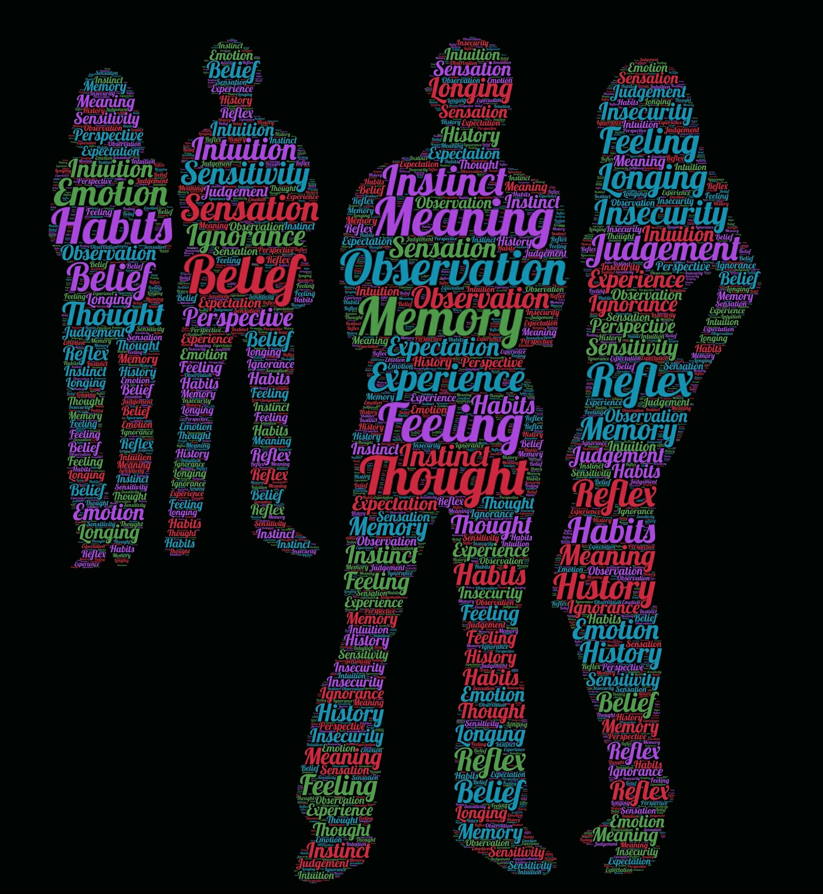
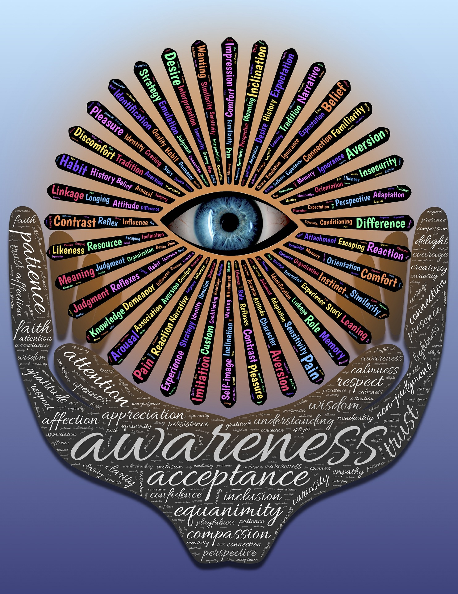
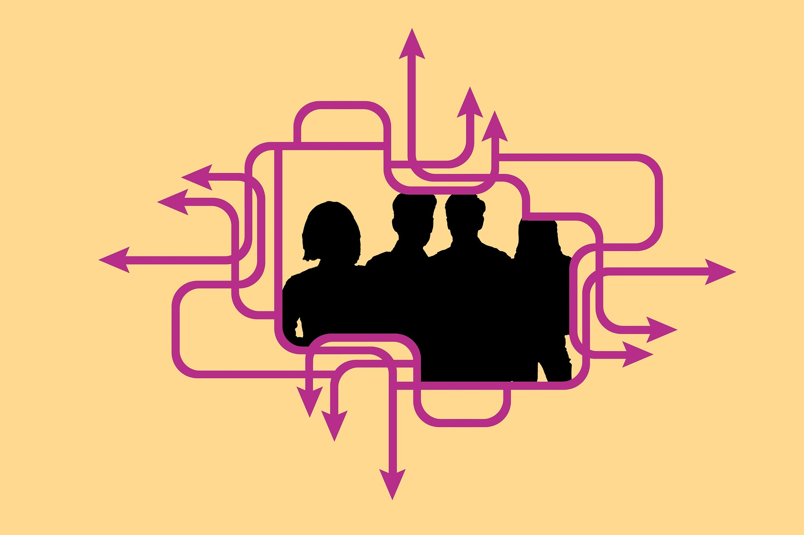
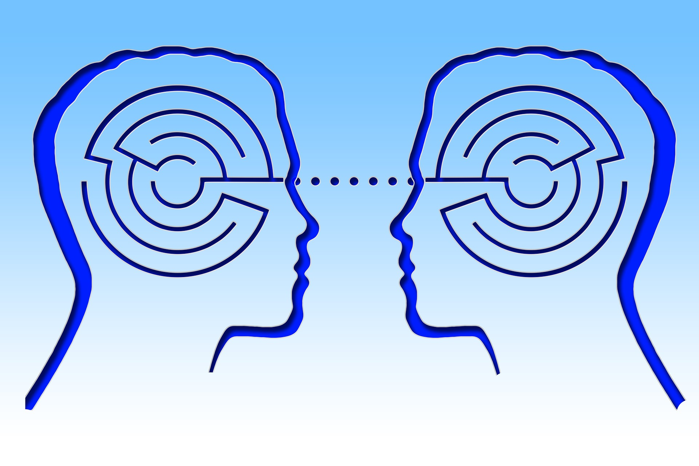
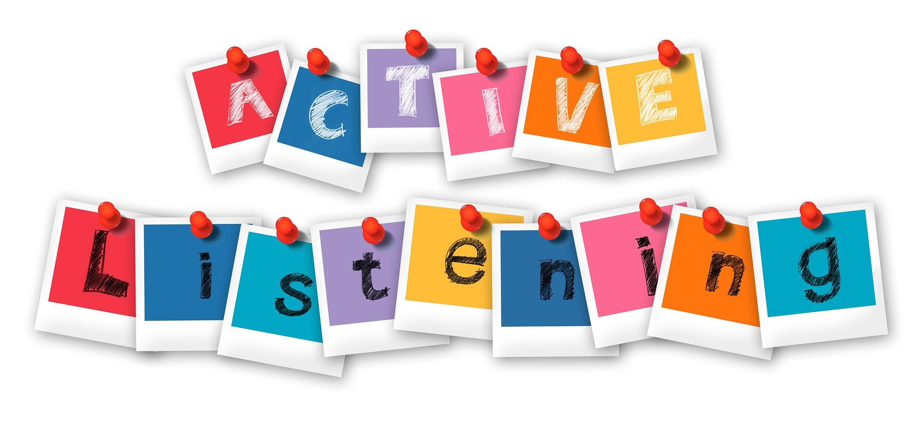
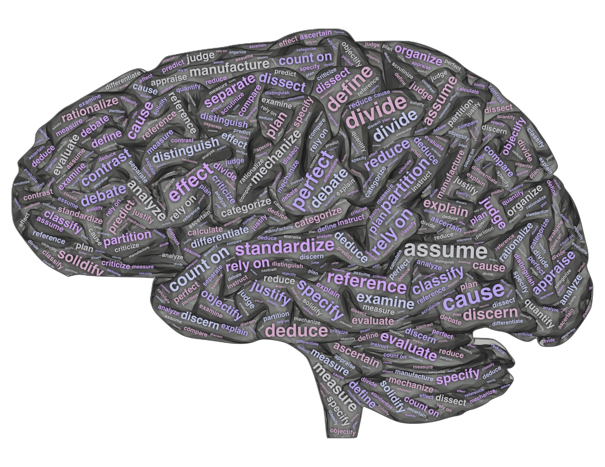
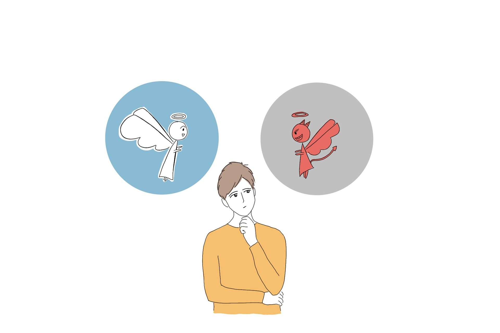

Discernment
The clear-eyed ability to see through manipulation.
Reading Underlying Incentives
Ignore what people proclaim they are doing and look strictly at what their incentives reward. When you understand the underlying payout structure, confusing behaviors suddenly make perfect mathematical sense.
Separating Signal from Performance
Filtering out emotional theatrics, loud posturing, and dramatic delivery to isolate the cold baseline facts. A performative display is usually designed to hide the absence of substance.

Diagnosing Manufactured Urgency
Recognizing when false deadlines and sudden panics are being engineered specifically to bypass your critical thinking. Real emergencies require calm precision; manufactured ones demand instant surrender.

Pattern Over Promise
Evaluating people, systems, and tools purely on their verifiable track record over time rather than their declarations. Words are easy to draft; consistent structural patterns never lie.
The Diagnostic Clarifier
Asking simple, neutral questions that test the structural integrity of a claim. When someone is attempting manipulation, a basic request for concrete specifics causes the entire narrative to wobble.

Spotting Unearned Obligations
Identifying subtle guilt trips and manufactured debts before you accept them. Discernment means seeing that an unsolicited favor is often just an advance invoice for future control.
Mapping Power Dynamics
Looking beneath formal organizational charts or surface social politeness to identify where real leverage sits. Understanding the true architecture of power keeps you from stepping on invisible tripwires.

Verifying Data Provenance
Refusing to accept second-hand summaries or hearsay at face value. Tracing claims back to their raw source code and initial documentation before adjusting your worldview.

Detecting Strawman Deflections
Noticing when someone subtly shifts the target of a conversation to argue against a point you never made. Spotting the pivot allows you to bring the discussion right back to bedrock reality.
Detached Observation
Stepping outside the emotional blast radius of an active conflict to observe it clinically. You cannot accurately diagnose the health of a machine while your hand is caught in the gears.

Recognizing Bad-Faith Traps
Knowing the difference between genuine curiosity and an argument staged purely to extract a reaction. Walking away from bad-faith debates saves your finite bandwidth for constructive work.

Bedrock Verification
Peeling away convenient narratives, polite assumptions, and wishful thinking until you reach irreducible, provable facts. True competence begins only when you build on bedrock truth.